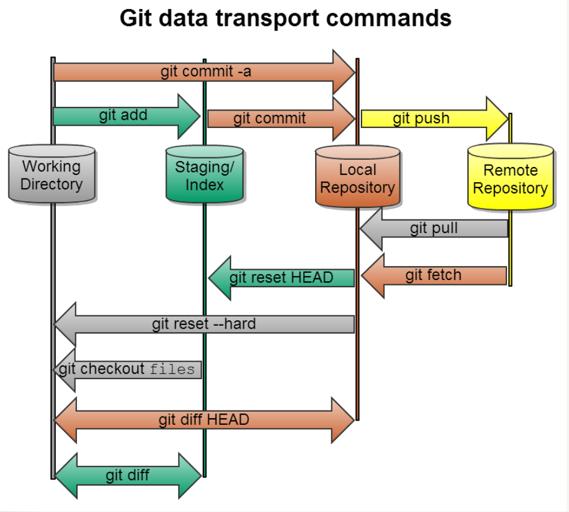
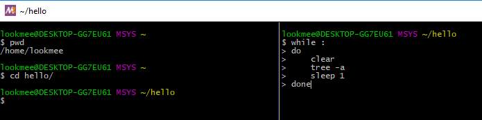
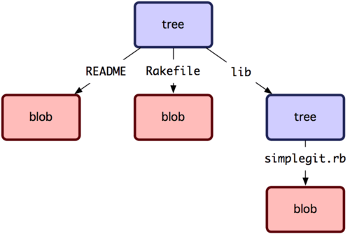
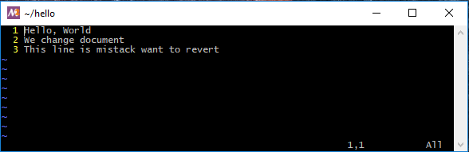
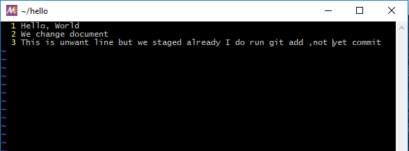
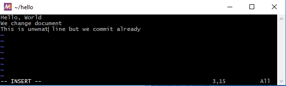
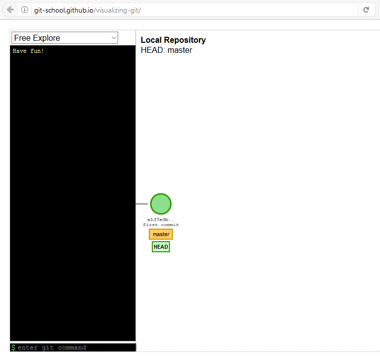
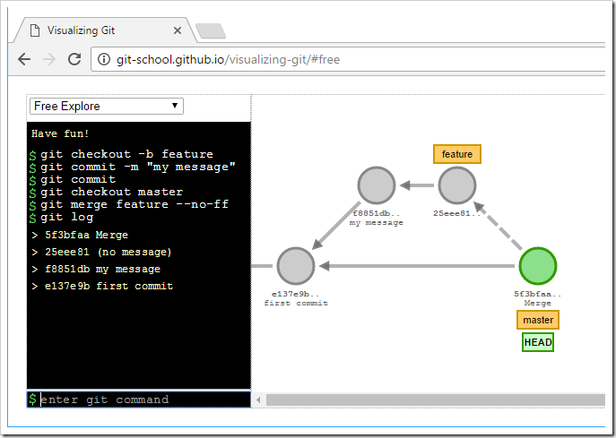
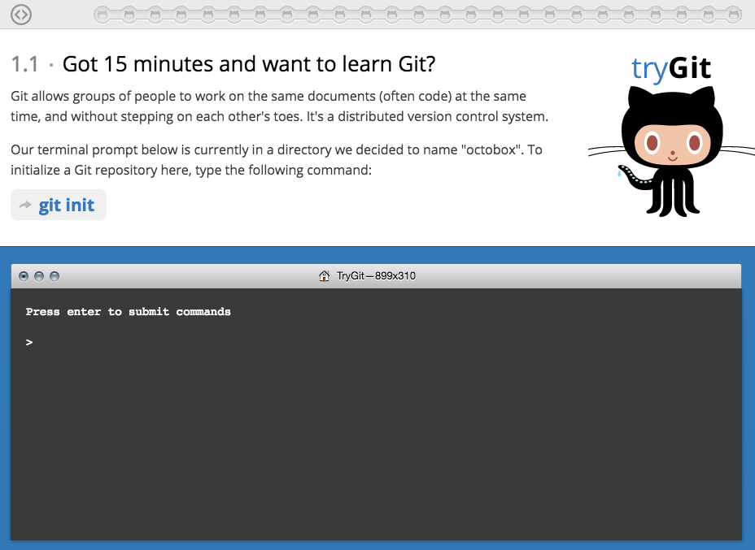

การใช้งาน GIT
ในการพัฒนา Software ปัจจุบัน การควบคุมเวอร์ชั่นของการพัฒนา หรือ Version Control มีบทบาทอย่างยิ่งต่อการพัฒนา และยังสามารถที่จะทำให้นักพัฒนาหลายคนสามารถทำงานร่วมกันได้
Lab 1 ติดตั้ง
# yum groupinstall "Development Tools"
# yum install gettext-devel openssl-devel perl-CPAN perl-devel zlib-devel
# yum install git
# git --version
การตั้งค่า กำหนด Account's default identity
git config --global user.name "Sawangpong Muadphet"
git config --global user.email "sawangpongm@gmail.com"
git config --global user.editor "vim"
Lab2 สถานะหรือ stage ต่างๆ

Lab3 สร้าง project director และสร้าง Repository
mkdir hello
cd hello
echo "Hello, World" > hello.txt
git init
Initialized empty Git repository in /home/lookmee/hello/.git/
git add hello.txt
git status
git commit -m "First Commit"
use tmux separate terminal in two pane, run script below in pane 2
while :
do
clear
tree -a
sleep 1
done

หรือ ใช้คำสั่ง watch
watch -n1 tree -a

ผลลัพท์
$ git commit -m "First Commit"
[master (root-commit) a659868] First Commit
1 file changed, 1 insertion(+)
create mode 100644 hello.txt
Lab4 ตรวจสอบสถานะ
$ git status
On branch master
nothing to commit, working tree clean
$ git log
commit a65986862a02f080b487ffb5ef99e051ad3d9c07 (HEAD -> master)
Author: Sawangpong Muadphet <sawangpongm@gmail.com>
Date: Sat Oct 28 03:53:21 2017 +0700
First Commit
Lab5 เปลี่ยนแปลง file สถานะ modifed
$ echo "We change document" >> hello.txt
$ git status
On branch master
Changes not staged for commit:
(use "git add <file>..." to update what will be committed)
(use "git checkout -- <file>..." to discard changes in working directory)
modified: hello.txt
no changes added to commit (use "git add" and/or "git commit -a")
//add change
$ git add .
$ git commit -m "Second Commit"
[master 5c64484] Second Commit
1 file changed, 1 insertion(+)
$ git log --pretty=oneline
5c6448485bdbe1f9b5b8d2962af0ed00982ee226 (HEAD -> master) Second Commit
a65986862a02f080b487ffb5ef99e051ad3d9c07 First Commit
$ git log --pretty=format:'%h %ad | %s%d [%an]' --graph --date=short
* 5c64484 2017-10-28 | Second Commit (HEAD -> master) [Sawangpong Muadphet]
* a659868 2017-10-28 | First Commit [Sawangpong Muadphet]
Lab 6 การสร้าง Common Aliases
สร้าง file ชื่อว่า .gitconfig ไปไว้ใน $HOME directory
cd ~
vim ~/.gitconfig
//
[alias]
co = checkout
ci = commit
st = status
br = branch
df = diff
hist = log --pretty=format:'%h %ad | %s%d [%an]' --graph --date=short
type = cat-file -t
dump = cat-file -p
หลังจากนั้นให้ปิด terminal และเปิดขึ้นมาใหม่
$ git st
$ git br
$ git hist
$ git df
Lab 7 checkout code
$ git log
commit 5c6448485bdbe1f9b5b8d2962af0ed00982ee226 (HEAD -> master)
Author: Sawangpong Muadphet <sawangpongm@gmail.com>
Date: Sat Oct 28 03:59:34 2017 +0700
Second Commit
commit a65986862a02f080b487ffb5ef99e051ad3d9c07
Author: Sawangpong Muadphet <sawangpongm@gmail.com>
Date: Sat Oct 28 03:53:21 2017 +0700
First Commit
$ ls #<-- ดูไฟล์
$ cat hello.txt
Hello, World
We change document
$ git checkout a65986 # git checkout <hash>
Note: checking out 'a65986'.
You are in 'detached HEAD' state. You can look around, make experimental
changes and commit them, and you can discard any commits you make in this
state without impacting any branches by performing another checkout.
If you want to create a new branch to retain commits you create, you may
do so (now or later) by using -b with the checkout command again. Example:
git checkout -b <new-branch-name>
HEAD is now at a659868... First Commit
$ cat hello.txt
Hello, World
กลับไปยัง เวอร์ชั่น ล่าสุด ใน master branch
$ git checkout master
$ cat hello.txt
Lab 8 Tagging Versions
เราสามารถ สร้าง tag ด้วยชื่อ เพื่อใช้สำหรับการอ้างอิง ต่อไป
$ git tag v1
$ git tag #--> list ดู tag
$ cat hello.txt
$ git log
$ git log
commit 5c6448485bdbe1f9b5b8d2962af0ed00982ee226 (HEAD -> master, tag: v1) #<-- history ดู tag ได้
Author: Sawangpong Muadphet <sawangpongm@gmail.com>
Date: Sat Oct 28 03:59:34 2017 +0700
Second Commit
$ git checkout v1^ #--> ( ^ ) หมายถึง "parent of v1"
Note: checking out 'v1^'.
You are in 'detached HEAD' state. You can look around, make experimental
changes and commit them, and you can discard any commits you make in this
state without impacting any branches by performing another checkout.
If you want to create a new branch to retain commits you create, you may
do so (now or later) by using -b with the checkout command again. Example:
git checkout -b <new-branch-name>
HEAD is now at a659868... First Commit
$ cat hello.txt
หากต้องการ ลบ tag
git tag -d v1
Lab 8 แก้ไขไฟล์ ใน local change หรือ working directory ก่อนสถานะ staging หรือก่อน git add -a
บางครั้งเราต้องการยกเลิกการแก้ใขกลับไปใช้ commit ล่าสุด ทำได้โดยคำสั่ง checkout
vim hello.txt

$ cat hello.txt
Hello, World
We change document
This line is mistack want to revert
$ git status
On branch master
Changes not staged for commit:
(use "git add <file>..." to update what will be committed)
(use "git checkout -- <file>..." to discard changes in working directory)
modified: hello.txt
no changes added to commit (use "git add" and/or "git commit -a")
จะเป็นว่า file hello.txt มีการ modify แต่ยังไม่มีการ stage
สั่งคำสั่ง diff ระหว่าง working directory และ repository ด้วยคำสั่ง git diff หรือ git diff head
$ git diff
diff --git a/hello.txt b/hello.txt
index 6b4508b..7eb0c84 100644
--- a/hello.txt
+++ b/hello.txt
@@ -1,2 +1,3 @@
Hello, World
We change document
+This line is mistack want to revert
lookmee@DESKTOP-GG7EU61 MSYS ~/hello
$ git diff HEAD
diff --git a/hello.txt b/hello.txt
index 6b4508b..7eb0c84 100644
--- a/hello.txt
+++ b/hello.txt
@@ -1,2 +1,3 @@
Hello, World
We change document
+This line is mistack want to revert
ใช้คำสั่ง checkout เพื่อ ทำการ checkout file ออกมาจาก repository
$ git checkout hello.txt
$ cat hello.txt
Hello, World
We change document
$ git status
On branch master
nothing to commit, working tree clean
Lab 9 แก้ไขไฟล์ ใน stage change หรือ stage status ก่อนสถานะ commit ก่อน git commit
เราต้องการแก้ไข file กลับคืนมาหลังจากที่เราได้ stage แล้ว
vim hello.txt
//
Hello, World
We change document
This is unwant line but we staged already I do run git add ,not yet commit

$ git add hello.txt
$ git status
On branch master
Changes to be committed:
(use "git reset HEAD <file>..." to unstage)
modified: hello.txt
สถานะ เป็น stage เรียบร้อยแล้ว และ พร้อมที่จะทำการ commit สามารถแก้ไขได้ โดย
$ git reset HEAD hello.txt
Unstaged changes after reset:
M hello.txt
เป็นการ clear staging area ที่เราพึ่งที่จะ staged ไป
โดยทั่วไป การ ใช้คำสั่ง reset นั้นเป็นการ clear stage เท่านั้น แต่สิ่งที่เราไม่ต้องการยังคงอยู่ใน working directory
$ git diff HEAD
diff --git a/hello.txt b/hello.txt
index 6b4508b..87540c2 100644
--- a/hello.txt
+++ b/hello.txt
@@ -1,2 +1,3 @@
Hello, World
We change document
+This is unwant line but we staged already I do run git add ,not yet commit
// ใช้คำสั่ง checkout อีกครั้ง
$ git checkout hello.txt
$ git status
On branch master
nothing to commit, working tree clean
Lab 10 แก้ไขไฟล์ ที่ได้ commit เรียบร้อยแล้ว
vim hello.txt
//
Hello, World
We change document
This is unwnat line but we commit already

$ git add hello.txt
$ git commit -m "commit hello.txt"
[master 19a8d96] commit hello.txt
1 file changed, 1 insertion(+)
เราได้ทำการ commit หรือ save ไปยัง repository เรียบร้อยแล้ว เราต้องการที่ แก้ไข หรือ revert commit
$ git revert HEAD # จะเปิด editor มาให้เราแก้ไข commit
//หรือ
$ git revert HEAD --no-edit
[master 559862d] Revert "commit hello.txt"
1 file changed, 1 deletion(-)
$ git log
commit 559862d00120cbbe6aabc36e890bd1a546cb2742 (HEAD -> master)
Author: Sawangpong Muadphet <sawangpongm@gmail.com>
Date: Sat Oct 28 11:44:36 2017 +0700
Revert "commit hello.txt" # <-- commit auto
This reverts commit 19a8d9638e582e67d87f8f48c28a112768240d13.
commit 19a8d9638e582e67d87f8f48c28a112768240d13
Author: Sawangpong Muadphet <sawangpongm@gmail.com>
Date: Sat Oct 28 11:40:53 2017 +0700
commit hello.txt
commit 5c6448485bdbe1f9b5b8d2962af0ed00982ee226 (tag: v1)
Author: Sawangpong Muadphet <sawangpongm@gmail.com>
Date: Sat Oct 28 03:59:34 2017 +0700
Second Commit
commit a65986862a02f080b487ffb5ef99e051ad3d9c07 (tag: rm)
Author: Sawangpong Muadphet <sawangpongm@gmail.com>
Date: Sat Oct 28 03:53:21 2017 +0700
First Commit
ลองดู history
$ git hist
* 559862d 2017-10-28 | Revert "commit hello.txt" (HEAD -> master) [Sawangpong Muadphet]
* 19a8d96 2017-10-28 | commit hello.txt [Sawangpong Muadphet]
* 5c64484 2017-10-28 | Second Commit (tag: v1) [Sawangpong Muadphet]
* a659868 2017-10-28 | First Commit (tag: rm) [Sawangpong Muadphet]
working direct ก็จะกลับคืนมาด้วย
$ cat hello.txt
Hello, World
We change document
Lab 11 visualization Git
ไปยัง website http://git-school.github.io/visualizing-git/ทำ
ให้ทดสอบคำสั่ง ดังรูป โดยพิม ในช่อง ล่างสุด แล้ว enter ทีละคำสั่ง

เปิดเวป ไปที่ https://try.github.io/levels/1/challenges/1 เพื่อทำการทดสอบการใช้งาน
